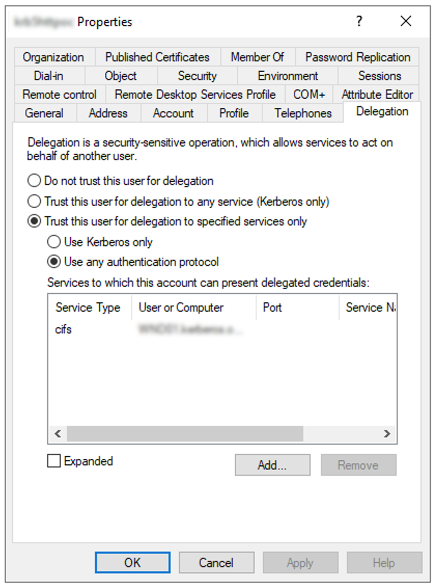
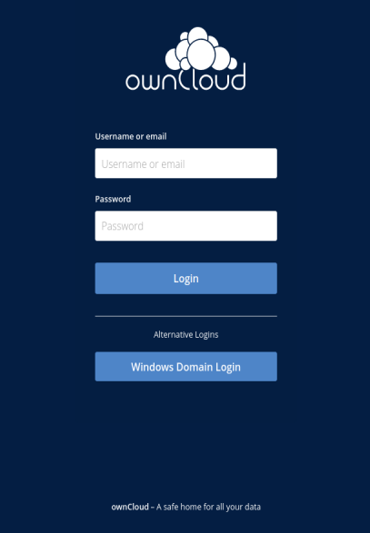

Kerberos
Introduction
Kerberos is an authentication protocol and authenticates two hosts using the shared secret authentication technique. The main goal of Kerberos is to enable application authentication without the need to transmit user passwords. It will share a secret among the two hosts that only they and the Key Distribution Center (KDC) know. Kerberos builds a secure communication link between two trusted hosts across an untrusted network like the Internet, using tickets.
With the Kerberos app, you can reuse the authentication ticket generated from a user’s Windows domain login for ownCloud and access file server resources via ownCloud without re-authentication.
General Information
When using the Kerberos app, the Windows login session from the user is taken to log in to ownCloud. This is very convenient, as the user does not need to re-authenticate for using ownCloud as he already has authenticated to his Domain. In addition by using the Kerberos ticket, the user can also use file resoures via the Windows Network Drive (WND) app without the need to re-authenticate. This generates a seamless user experience. This is done by the configuration made, which enables the webserver to make the ticket available for PHP for further processing.
Kerberos Benefits
This is a brief list of Kerberos benefits:
-
Secure
Kerberos never transmits passwords over the network. -
Single-Sign-On
Kerberos only requires the user to type their password once when first authenticating the client. -
Trusted Third Party
Kerberos uses a centralized authentication server known as the Key Distribution Center (KDC) that all other devices in the network trust by default. This outsourcing ensures that sensitive information is not stored on a local machine. -
Mutual Authentication
In Kerberos, both ends of communication must be authenticated before communication is permitted. -
Delegated Authentication
Kerberos can provide delegated authentication for accessing backend systems. Delegated authentication allows to impersonate a client when accessing resources on the client’s behalf. -
Interoperability
The Kerberos V5 protocol implemented in Active Directory Domain Services is based on standards set forth by the IETF. It allows Kerberos implementations in Active Directory to interoperate with other networks in which Kerberos V5 is used for authentication. -
Microsoft Azure AD Kerberos is a new authentication capability of Azure AD that allows using the Kerberos authentication protocol to authenticate against Azure AD.
Kerberos Core Components
-
Kerberos Realm
A logical network, similar to a domain, over which a Kerberos authentication server has the authority to authenticate a user, host or service. -
Key Distribution Centre (KDC)
Contains the Authentication Server (AS) and the Ticket Granting Service (TGS). Its main function is to be a mediator between these two, relaying messages from the AS, grants a ticket-granting ticket (TGT), then passing that to be encrypted by the TGS. The KDC for a domain is located on a domain controller. -
Authentication Server (AS)
A client authenticates themselves to the AS using a username and password login. The AS then forwards the username to the KDC that in turn grants a TGT. -
Ticket Granting Service (TGS)
When a client wants to access a service, they must present their TGT to the TGS. -
Service Principal Name (SPN)
An identifier given to a service instance to associate a service instance with a domain service account.
What are Kerberos Tickets?
The main structures handled by Kerberos are the tickets. These tickets are delivered to the users in order to be used by them to perform several actions in the Kerberos realm. There are 2 types:
-
The TGS (Ticket Granting Service) is the ticket which the user can use to authenticate against a service. It is encrypted with the service key.
-
The TGT (Ticket Granting Ticket) is granted by the KDC after the client is successfully authenticated. It is presented to the KDC to request for TGSs and is encrypted with the KDC key.
Comparison Domain Authentication Versus LDAP
-
When users authenticate themselves to their desktop, the Windows OS sends their credentials to a Domain Controller which is also a Kerberos Distribution Center (KDC). The users get a ticket which can be used to authenticate to other network services.
-
When accessing an LDAP server using Kerberos authentication, the user binds to LDAP using a Kerberos ticket rather than sending a password. The LDAP server then validates the ticket and verifies that it belongs to the user trying to bind.
-
LDAP is not specific to Active Directory. Microsoft implemented LDAP as part of Active Directory capabilities to allow AD DS to work with LDAP-based applications. Kerberos is more secure than LDAP, but they are often used together in Active Directory. When you view objects in Active Directory Users and Computers (ADUC), you are authenticated with Kerberos, and then LDAP is used to query the Active Directory database efficiently and effectively.
Kerberos Terms
-
Kerberos:
Kerberos is an authentication protocol that supports the concept of Single Sign-On (SSO). In the case of HTTP, support for Kerberos is usually provided using the term "SPNEGO" authentication mechanism. -
Kerberos Realm:
An administrative domain for authentication is denoted by the term realm. In Windows, realms are called domains. Its goal is to define the restrictions on when an authentication server can authenticate a user, host, or service. This does not imply that a user and a service must be members of the same realm in order for authentication to occur: if the two objects are connected through a trust connection despite belonging to different realms, authentication can still occur. -
Principal:
In a Kerberos system, a Kerberos Principal represents a distinct identity to whom Kerberos can issue tickets for access to Kerberos-aware services. The "/" separator is used to separate the various components that make up principal names. The "@" character can be used to identify a realm as the name’s final element. If no realm is specified, it is presumed that the Principal belongs to the default realm set in thekrb5.conffile. -
Users:
A process that accesses a service on the behalf of a user. There can be multiple users within a realm. -
Service:
Something the user wants to gain access to. -
GSSAPI:
Programs can access security services through the Generic Security Service Application Program Interface(GSSAPI), which is an application programming interface (API). GSSAPI is an IETF standard. It doesn’t offer any security on its own. Instead, GSSAPI implementations are offered by security-service providers. The exchange of opaque messages (tokens), which conceals the implementation detail from the higher-level application, is the distinguishing characteristic of GSSAPI applications. -
SPNEGO:
Client-server software uses the Simple and Protected GSSAPI Negotiation Mechanism, frequently called "spen-go," to negotiate the selection of security technology. When a client application has to log in to a remote server but neither end is certain which authentication protocols the other supports, SPNEGO is employed. The pseudo-mechanism uses a protocol to identify the available common GSSAPI mechanisms, chooses one, and then assigns all subsequent security actions to that chosen mechanism. -
KDC:
A Key Distribution Center is a network service that supplies tickets and temporary sessions keys; or an instance of that service or the host on which it runs. The KDC services both initial ticket and ticket-granting requests. The initial ticket portion is sometimes referred to as the Authentication Server (or service). The ticket-granting ticket portion is sometimes referred to as the ticket-granting server (or service).

Server Prerequisites
-
Make sure the clocktime of the KDC, the client and the server the ownCloud instance is running on is in sync. 5 minutes are the highest difference you may allow for Kerberos to work properly. Without going into the details, you may use NTP for that task.
-
All members in the realm, which includes cients, must support
DES3, AES128 or AES256encryption. This applies to Windows 10 and modern Linux based OS desktops. If a client does not support this encryption standard, he can not use Kerberos. Alternatively the legacy cryptoRC4-HMAC-EXPcan be added during configuration - which is strongly discouraged for security reasons. See the Kerberos supported encryption types for more information. -
Replace in the configuration examples where applicapable the placeholders accordingly:
-
<user-name>
The name of the user account likeowncloud_spnego_userwhich is used as principal. -
<complex-password>
A complex password for<user-name>. Remember this password as it helps debugging, but keep protected as you can access domain servcies with it. Also see: Keytab Files for additional info when this password needs to be changed. -
<FQDN>
The fully qualified domain name the ownCloud instance is accessed, likeowncloud.example.com. -
<realm>
The name of the realm is taken to be the DNS domain name of the server in all lowercase letters likeexample.com. -
<REALM>
The name of the REALM is taken to be the DNS domain name of the server in all capital letters likeEXAMPLE.COM. -
<keytab-file-location>
A path that is accessible by Apache like/etc/apache2/. -
<domaincontroller-x>
The KDC. The Active Directory server isdc1.example.com. In a larger organization, two or more domain controllers for redundancy reasons can be found likedc2.example.comanddc3.example.com. -
<administration-server>
The administration server. This is typically the same as the LDAP/Active Directory server likedc1.example.comor in case of multiple domain controllers, this should be normally set to the master DC.
-
ownCloud Server Side
-
Check that you have the latest pear version installed.
-
Install, if not already done the
php-dev-<your version>environment:sudo apt install php-dev-<your version>Check the existance of
phpizewith:whereis phpize -
Install and enable the
php-krb5library:sudo apt install libkrb5-dev sudo pecl channel-update pecl.php.net sudo pecl install krb5If not exists, add a file in
/etc/php/<your-php-version>/mods-available/krb5.iniwith the following content:extension=krb5.soFinalize with:
sudo phpenmod krb5Check with:
php -i | grep KerbKerberos 5 support => enabled Library version => Kerberos 5 release 1.17 -
Install handy command-line tools for Kerberos:
Note thatkrb5-useris an actual requirement, the Kerberos implementation in the WND app requires thekvnocommand which is contained in that package.sudo apt install krb5-user -
DNS records
Create a DNS record for the public FQDN of the ownCloud instance (<FQDN>).-
If there is only a single web site on the web server, the simplest option is to make sure that the public URL of the site is the same as the FQDN of the server configured in the
/etc/hostsconfiguration file. Create an A DNS record for this FQDN pointing directly to the server’s IP address. -
However, if there are two or more web sites hosted on the same web server with different host headers, the situation becomes a bit more complicated and the DNS CNAME records and keytab file have to properly be configured. One option in this case is to use the same service account identity for all web sites hosted on the web server, configure the keytab file for the server’s own FQDN configured in the
/etc/hostsfile and create CNAME DNS aliases for the web site pointing to the server’s FQDN. The browsers will perform DNS name canonization and will request Kerberos service tickets not for the CNAME addresses of the web sites, but for the server’s own FQDN.This option can also be used if you have only one web site but want to keep the servers hostname and website address distinct.
-
-
Download the ownCloud Kerberos app from the Marketplace and enabe it with:
sudo -u www-data ./occ app:enable kerberos
Domain Controller Side
Service Principal Name (SPN)
-
A Service Principle Name (SPN) is the unique, in the entire Domain Forest identity for a Service, mapped with a specific service account in a server. It is used for mutual authentication between a user and a service account. SPNs help with Kerberos authentication client applications to request service authentication for an account, even if the client doesn’t have the account name.
-
Note that Kerberos depends on accurate naming, as server names are used to build the Service Principal Name (SPN) used to request tickets from a KDC. For clients, this becomes crucial when a load balancer is used, because they have, intentionally, no idea which server they are going to connect. For more details see: Load Balancers and Kerberos.
-
A SPN consists of:
<service_class>/<hostname_or_FQDN>:<port>/<service name>, where<port>and<service name>are optional components.Using
HTTP, which is a built in service class, in the configuration example below, enables that all Web applications on the same host including applications hosted by Apache, if they are configured for the use with Kerberos, will be granted tickets based on the domain user account. -
Note that SPN always include the name of the host computer on which the service instance is running, for more details see: Microsoft: Service Principal Names.
Keytab Files
-
Keytab files contain pairs of Kerberos principals and encrypted keys. Any account with read permission on a keytab file can use all of the keys it contains. Access restrictions and monitoring permissions on any Kerberos keytab files used must be part of the Kerberos configuration.
-
It is recommended that a regular user account for the server in the Active Directory domain is created. It must be a user account, not a computer account. This is because, in a Microsoft Active Directory Domain, a keytab file is only generated for user accounts, not computer or service accounts. Computer and service accounts manage their own passwords.
-
Multiple service instances can not be mapped to the same user account.
-
The Keytab file entry is encrypted with the Active Directory account password. Therefore, the keytab file must be regenerated whenever the Active Directory
<user-name>password has changed.
User Account
The user account <user-name> must be associated with the service principal name (SPN) and is used by the Kerberos domain controller to generate and verify service tickets. The SPN is derived from the URL of the service to be accessed.
The user account should have the following properties set:
-
User cannot change password
-
Password never expires
Domain on Windows
If you are running a Windows native domain, you can use the Windows Server Support Tools, setspn and ktpass. These are command line utilities enable to map the <user-name> to the application server and its service class respectively crating a keytab file. Login as administrator to the domain controller for the next tasks.
-
Create a principal (user):
Use the Microsoft Management Console (MMC) to create a new user account with the DNS name of the server that hosts the ownCloud instance.-
First name:
<user-name> -
Password:
complex-password -
User login name:
HTTP/<FQDN>@<REALM> -
Pre-windows logon name:
<user-name> -
Select option:
Password never expires -
Do not select this option:
User must change password at next logon -
In Delegation
-
Select
Trust this user for delegation to specified services only -
Select
Use any authentication protocol -
Add the service type and server(s) for delegated credentials like:
cifs/<hostname_or_FQDN>
(choose the server(s) where the smb service is provided and select cifs as service type)
-
-
-
Associate the new user with the Service Principal Name (SPN).
To do so, open a command shell and type:setspn -S HTTP/<FQDN>@<REALM> <user-name>Verify
setspnwith:setspn -L <user-name>See the Microsoft setspn documentation for details and more parameters.
-
Map the account
Map the account<user-name>to the service principalHTTP/<FQDN>@<REALM>and generate a keytab file. To do so, open a command shell and type:ktpass -princ HTTP/<FQDN>@<REALM> -mapuser <user-name>@<REALM> -crypto AES256-SHA1 -ptype KRB5_NT_PRINCIPAL -pass <complex-password> -out C:\temp\<user-name>.keytabNote that the parameter crypto is according the Microsoft documentation recommended to be set.
-
Move the generated keytab file
<user-name>.keytabto the Linux server hosting the ownCloud instance to location<keytab-file-location>. Note that the file must be accessible by the web server.
Domain on Linux
The following section is only necessary if the domain runs via Samba. In this case the necessary libraries have been installed which also contain the command line tool samba-tool.
-
Create a user for use with Kerberos:
samba-tool user create <user-name> <complex-password> samba-tool user setexpiry <user-name> --noexpiry -
Set the correct cipher version to be used, see Samba Generating Keytabs and Samba net tool:
net ads enctypes list <user-name>Set
AES256-CTS-HMAC-SHA1-96explicit, because if not set, unsecure ciphers are also enabled.net ads enctypes set <user-name> 10 -
Configure SPN for use with Kerberos and export the keytab file:
samba-tool spn add HTTP/<FQDN>@<REALM> <user-name>samba-tool spn list <user-name>samba-tool domain exportkeytab --principal=HTTP/<FQDN> <keytab-file-location>/<user-name>.keytab -
Move the generated keytab file
<user-name>.keytabto the Linux server hosting the ownCloud instance to location<keytab-file-location>. Note that the file must be accessible by the web server.
Configure ownCloud Server
Follow these steps on the server running ownCloud:
-
Configure
/etc/krb5.conffor use with Kerberos.
Note that only required/recommended or non-default settings are used:[libdefaults] default_realm = <REALM> default_tkt_enctypes = aes256-cts-hmac-sha1-96 default_tgs_enctypes = aes256-cts-hmac-sha1-96 permitted_enctypes = aes256-cts-hmac-sha1-96 forwardable = true [realms] <REALM> = { kdc = <domaincontroller-1> #kdc = <domaincontroller-2> #kdc = <domaincontroller-3> #master_kdc = <domaincontroller-1> admin_server = <domaincontroller-1> } [domain_realm] .<realm> = <REALM> <realm> = <REALM> [logging] kdc = SYSLOG:NOTICE admin_server = SYSLOG:NOTICE default = SYSLOG:NOTICEA description of each section and the meaning of keys is available at the MIT krb5.conf documentation.
-
Protect the
keytabfile so only the owner (the web server) can read it:sudo chown www-data:www-data <keytab-file-location>/<user-name>.keytabsudo chmod 0400 <keytab-file-location>/<user-name>.keytab -
Check the validity of the
keytabfile:klist -e -k -t <keytab-file-location>/<user-name>.keytabKeytab name: FILE:<user-name>.keytab KVNO Timestamp Principal ---- ---------------- --------------------------------------------- 4 10/01/2023 16:23 HTTP/<FQDN>@<REALM> (aes256-cts-hmac-sha1-96) -
Display the current key version number for a principal:
kvno HTTP/<FQDN>@<REALM>HTTP/<FQDN>@<REALM>: kvno = 4 -
Attempt to use the
keytabfile to authenticate as the service principal:kinit -k -t <keytab-file-location>/<user-name>.keytab HTTP/<FQDN>@<REALM>klistTicket cache: FILE:/tmp/krb5cc_0 Default principal: HTTP/<FQDN>@<REALM> Valid starting Expires Service principal 31/10/2023 14:11 01/11/2023 00:10 <user-name>/<REALM>@<REALM> renew until 01/11/2024 14:11 -
Destroy the Kerberos ticket for security reasons:
kdestroyTickets destroyedNote that if you issue this command during regular operation, all sessions for users using ownCloud with Kerberos will end and need to re-login.
-
Create a new ownCloud config file
/path-to-owncloud/config/kerberos.config.phpwith the following contents or add only the comment and key to an existingconfig.phpfile. More Kerberos config options can be found in the Config Apps Sample description:<?php $CONFIG = [ /** * Path to the keytab file to use, defaults to '/etc/krb5.keytab' */ 'kerberos.keytab' => '<keytab-file-location>/<user-name>.keytab', ];A new file will be read additionally to existing config files. See the Apps Config.php Parameters for more Kerberos configuration options.
Browser Prerequisites
Configure Google Chrome and Microsoft Edge
-
Open the Control Panel by pressing Win+R and type control, select .
-
On the Advanced tab and in the Security section, select Enable Integrated Windows Authentication (if it was not checked, a restart is required).
-
On the Security tab, select Local intranet, Click Custom Level.
-
In the User Authentication/Logon section, select Automatic logon only in Intranet zone.
-
Click OK.
-
Click Sites and select all check boxes.
-
Click Advanced and add, if not exists, the ownCloud website to the local zone . For example,
https://<FQDN>. -
Click Add.
-
Command line parameters
--auth-server-whitelist="<FQDN>" --auth-negotiate-delegate-whitelist="<FQDN>"You can see which policies are enable by typing
chrome://policy/into Chrome’s address bar. -
Policy files
With Linux, Chrome will also read policy files from
/etc/opt/chrome/policies/manageddirectory. Add a file likekerberos-policies.jsonwith the following content:{ "AuthServerWhitelist" : "<FQDN>", "AuthNegotiateDelegateWhitelist" : "<FQDN>", "DisableAuthNegotiateCnameLookup" : true, "EnableAuthNegotiatePort" : true }
Configure Mozilla Firefox
-
In the browser window, enter the following URL: about:config.
-
Click Accept the Risk and Continue.
-
In the Search preference name field, enter:
network.negotiate-auth.trusted-uris
and double click it. -
Specify a FQDN of the ownCloud website with a protocol, for example,
https://<FQDN>. -
Click Save.
Windows Domain Login
When users log in to the domain, the client has received the necessary Kerberos ticket, see image above, which is also available to browsers. Now, when users open a browser and try to log in to ownCloud with the Kerberos app enabled, they will see the following screen:

Compared to a standard login using a user name and password, the user clicks on the Windows Domain Login button. With this button, ownCloud requests a new ticket on behalf of the Windows user logged in, which is technically a constrained delegation. With this button, the browser takes the Kerberos ticket from the client and uses it for the ownCloud login process. If the WND App is installed as well, the ownCloud service user might request later on an additional Kerberos ticket on behalf of the Windows user logged in, which is technically again a constrained delegation.
Note that if you have not accessed a service like ownCloud via Kerberos before, Windows will show a popup to authenticate, which is a standard Windows security procedure. This can also happen if the Kerberos ticket has expired.
Note that the text printed on the button Windows Domain Login can be customized, see the Apps Config.php Parameters.